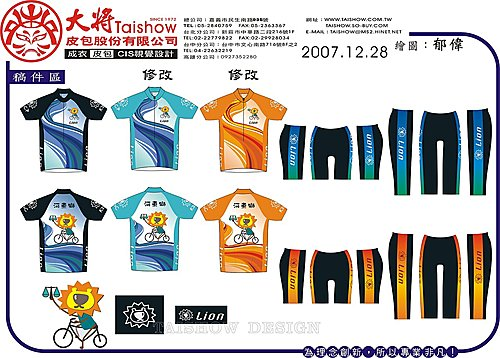

本車隊車衣經由施董、小揚、小超提供車衣設計之構想、理念，再加上阿聰、阿昌、貓哥、小吟、小珍、小慧、小瑜、大雄、阿珠、小瑤、小雅、阿山哥等人就車衣設計提供提供寶貴意見，再商請留英設計師設計，已於日前設計完成本車隊專屬之自行車車衣褲，共有短袖上衣3款，長褲2款，短褲2款，並已完成訂購，預計於97年2月底製作完成。
本車隊因位於愛河之東側，故取名為「河東」，且因喜愛「獅子」之沈穩內斂性格，亦具有王者風範，故取名「河東獅」，而車衣上那隻騎乘腳踏車的獅子， 正在愛河旁享受騎乘腳踏車之樂趣 ，也恰反應本車隊以休閒、健身為主軸的隊風。